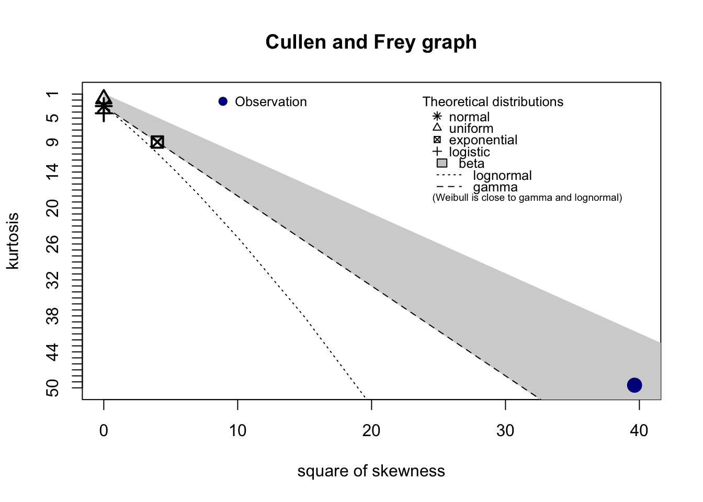
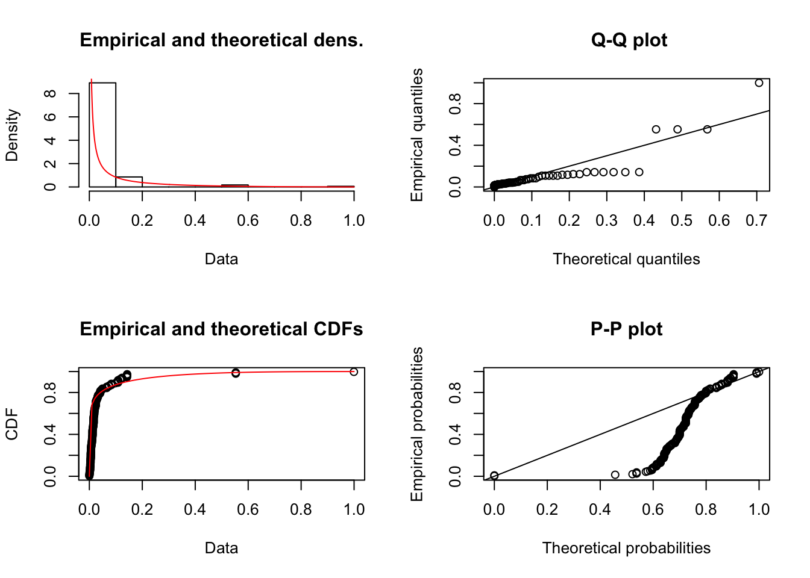
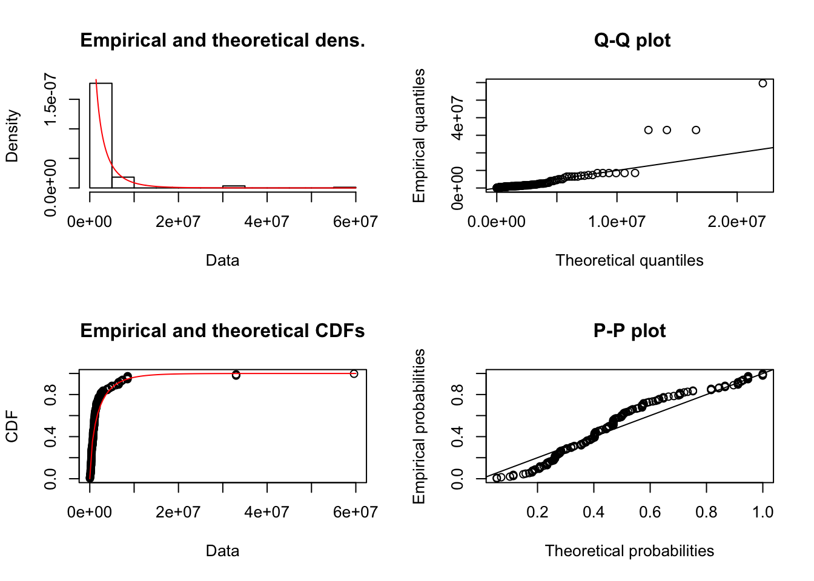
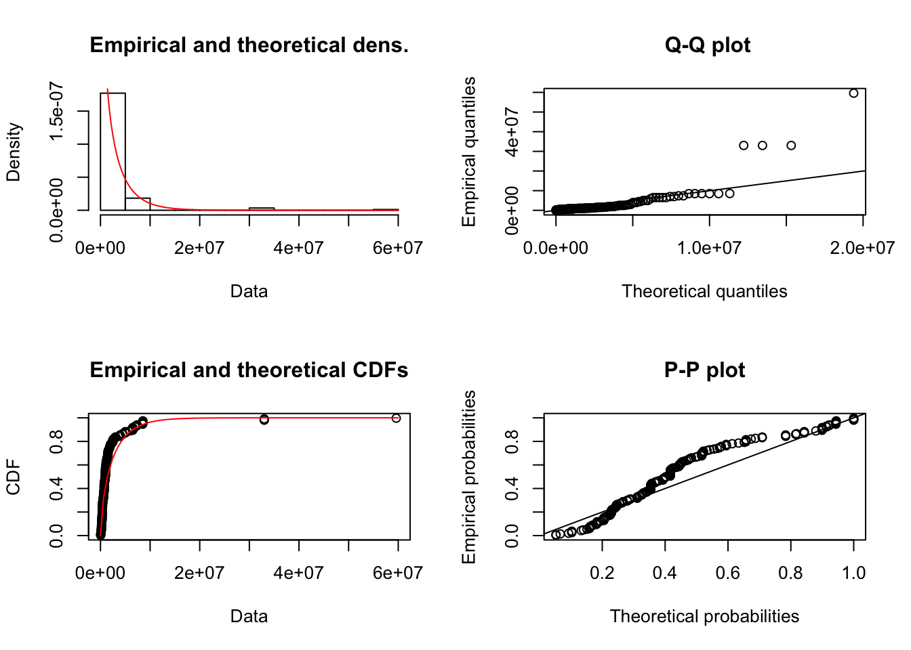
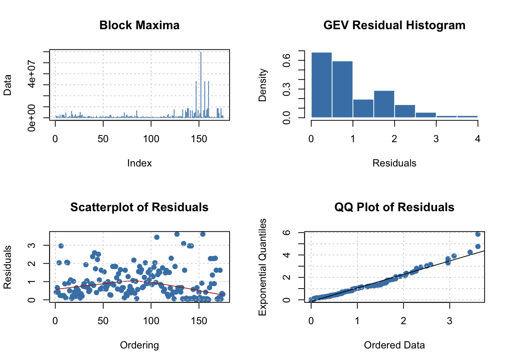
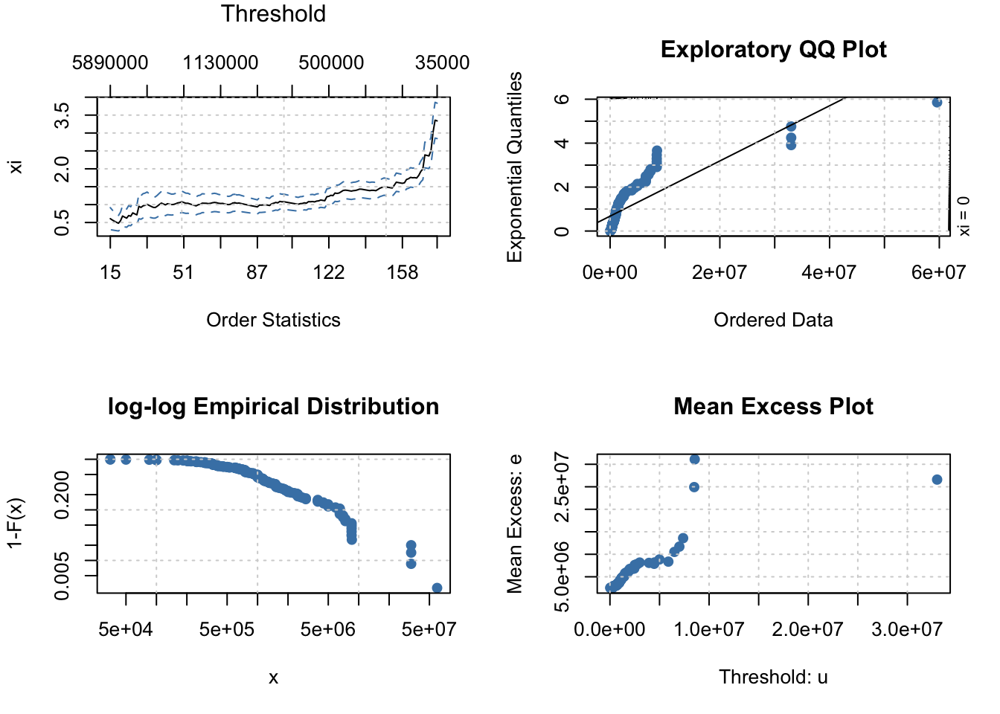
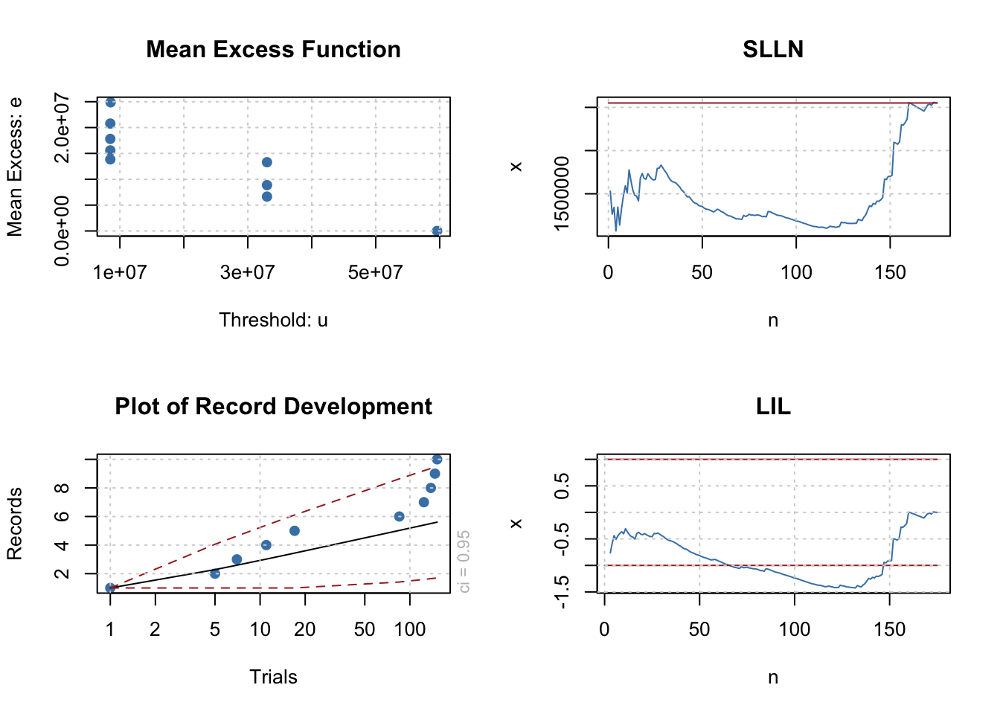
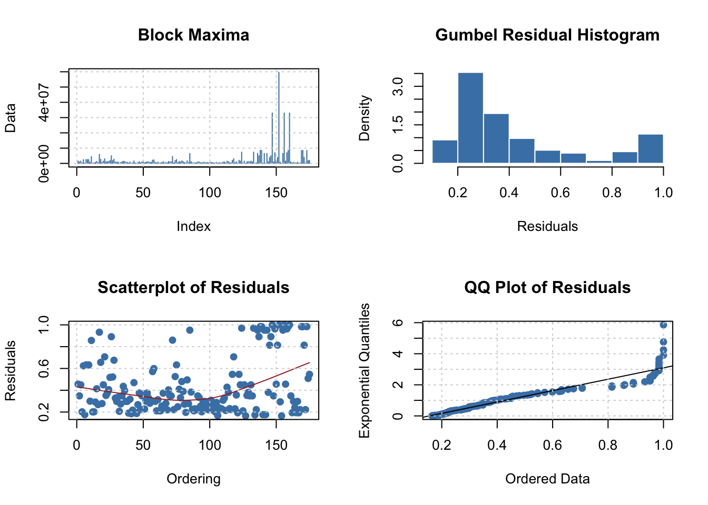
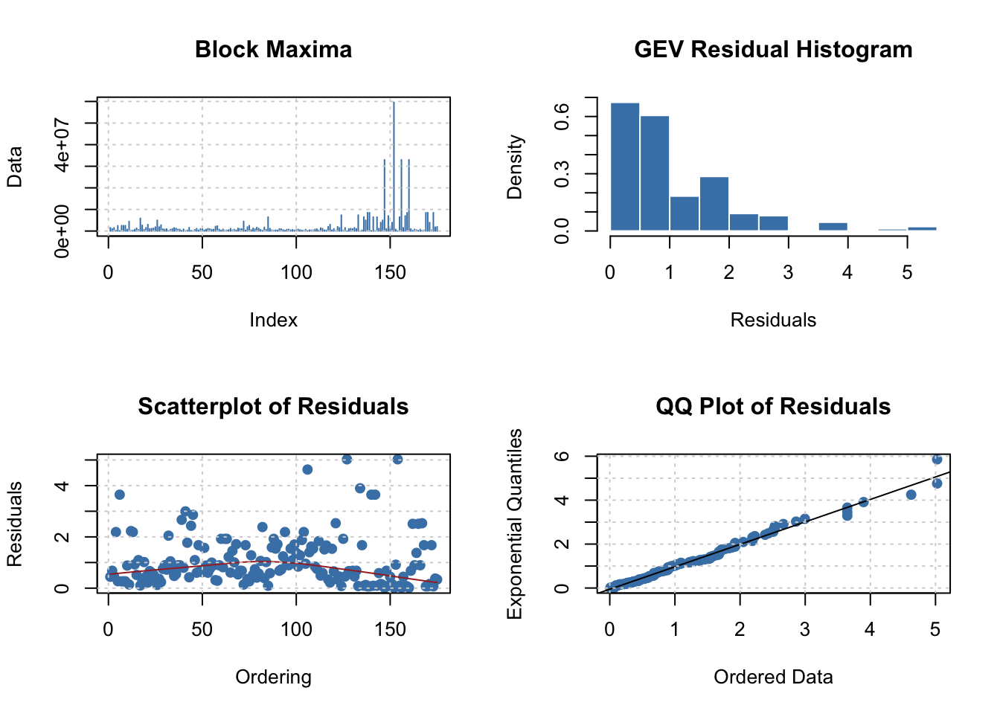
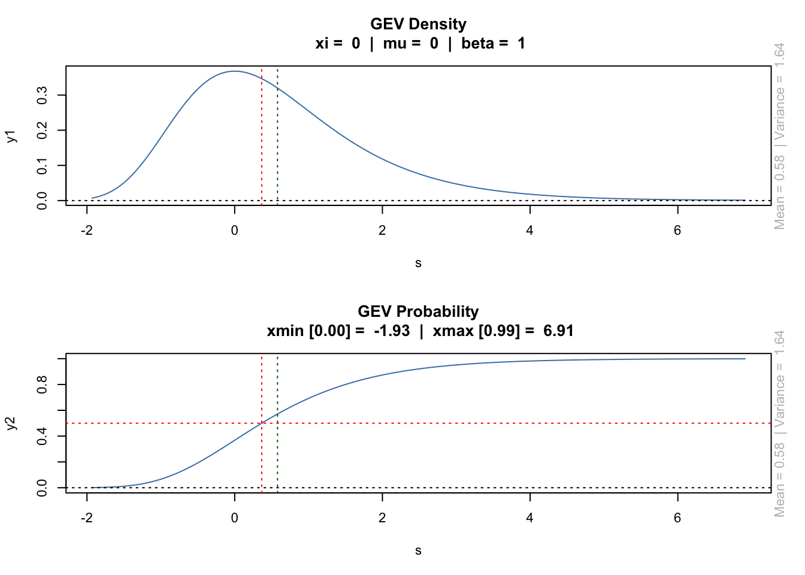

Chapter9 Distributions
load("/Users/dvf/Desktop/Thesis_2017/completedxptoen.RData")completed data (completedxptoen)
variables: Total Investimento; Total CS Inv; Non, Equity, Ratio) ##continuous variables : CAE; Cat. Ações; Investidores #categorical
gets summary stats + cullen and frey graph

## summary statistics
## ------
## min: 35000 max: 59600000
## median: 940000
## mean: 2550640
## estimated sd: 6305631
## estimated skewness: 6.295945
## estimated kurtosis: 49.55787values must be in [0-1] to fit a beta distribution needs transformation
x_scaled <- (completedxpto$Maximum.Reported.Investment..in.t2.-min(completedxpto$Maximum.Reported.Investment..in.t2.))/max(completedxpto$Maximum.Reported.Investment..in.t2.)
fit.betaTotalInv <- fitdist(x_scaled, "beta", method = "mme", lower = c(0, 0))
##plots density, qq, cdf and pp
plot(fit.betaTotalInv)
##PP
##same for weibull
fit.weibull <- fitdist(completedxpto$Maximum.Reported.Investment..in.t2., "weibull", method = "mle", lower = c(0, 0))
plot(fit.weibull)
##same w/gamma; method mme
fit.gama <- fitdist(completedxpto$Maximum.Reported.Investment..in.t2., "gamma", method = "mle", lower = c(0, 0))
plot(fit.gama)
##comparing both distributions (Goodness-of-fit statistics)
gofstat(list(fit.weibull, fit.gama)) #problem with extreme values## Goodness-of-fit statistics
## 1-mle-weibull 2-mle-gamma
## Kolmogorov-Smirnov statistic 0.1434628 0.1982816
## Cramer-von Mises statistic 1.0093777 1.7886531
## Anderson-Darling statistic 5.9998390 9.1423805
##
## Goodness-of-fit criteria
## 1-mle-weibull 2-mle-gamma
## Akaike's Information Criterion 5463.816 5490.179
## Bayesian Information Criterion 5470.146 5496.5099.0.0.1 Transformation
log and bc transformations, same problem with residuals on the extremes best was log w/ weibull, still density plot/histogram seems to not fit, problems with extreme values too bc, needs to be calculated the lambda first, then insert on bc transformation
9.0.0.2 extreme values analysis/distribution, or GEV
install.packages(“evir”) #gev regression, includes PP, has POT
library(extRemes) #same as the other one, more for weather/climate, has a GUI (in2extRemes)
install.packages(“fExtremes”) # get for finantial EVA
install.packages(“ismev”)
install.packages(“evd”) #most used EVA
library (fExtremes)
gevFit(completedxpto$Maximum.Reported.Investment..in.t2.)##
## Title:
## GEV Parameter Estimation
##
## Call:
## gevFit(x = completedxpto$Maximum.Reported.Investment..in.t2.)
##
## Estimation Type:
## gev mle
##
## Estimated Parameters:
## xi mu beta
## 7.761535e-01 7.220216e+05 7.311023e+05
##
## Description
## Thu Sep 28 19:47:18 2017GEV parameter estimation
fit <- gevFit(completedxpto$Maximum.Reported.Investment..in.t2., type = "pwm")
print(fit)##
## Title:
## GEV Parameter Estimation
##
## Call:
## gevFit(x = completedxpto$Maximum.Reported.Investment..in.t2.,
## type = "pwm")
##
## Estimation Type:
## gev pwm
##
## Estimated Parameters:
## xi mu beta
## 6.736842e-01 6.632499e+05 7.311025e+05
##
## Description
## Thu Sep 28 19:47:18 2017##if not stated, will plot interactive plot
par(mfcol = c(2, 2))
plot(fit, which = 1)
plot(fit, which = 2)
plot(fit, which = 3)
plot(fit, which = 4)
Problem with mle method, use “Probability Weighted Moments#: pwm, type =”pwm"
find Threshold
findThreshold(completedxpto$Maximum.Reported.Investment..in.t2.)## n=8
## 7380000Extracts peaks over Threshold
pointProcess(completedxpto$Maximum.Reported.Investment..in.t2.)## [1] 8550000 33000000 59600000 33000000 33000000
## attr(,"index")
## [1] 138 147 152 156 160hillPlot hillPlot(completedxpto$Total.Máximo.Reportado.em.Investimento..em.t2., plottype = “xi”)
chiplot chiplot(completedxpto, 3) #goes by number not name
par(mfrow = c(2, 2))
par(mfcol = c(2, 2))
hillPlot(completedxpto$Maximum.Reported.Investment..in.t2., plottype = "xi")
#Explorative Data Analysis
grid()
#plots of empirical distribution
emdPlot(completedxpto$Maximum.Reported.Investment..in.t2.)
#exponential/Pareto quantile plot
qqparetoPlot(completedxpto$Maximum.Reported.Investment..in.t2.)
#normal quantile plot
##qqPlot(completedxpto$Total.Máximo.Reportado.em.Investimento..em.t2.)
#mean excesses over a threshold
mePlot(completedxpto$Maximum.Reported.Investment..in.t2.)
par(mfcol = c(2, 2))
#Mean Excess Function
mxfPlot(completedxpto$Maximum.Reported.Investment..in.t2.)
#Record development compared with iid data
recordsPlot(completedxpto$Maximum.Reported.Investment..in.t2.)
#verifies Kolmogorov's strong law of large numbers
sllnPlot(completedxpto$Maximum.Reported.Investment..in.t2.)
#verifies Hartman-Wintner's law of the iterated logarithm
lilPlot(completedxpto$Maximum.Reported.Investment..in.t2.)
Lots ACF of exceedences over a threshold
#xacfPlot(completedxpto$Maximum.Reported.Investment..in.t2.)9.0.0.3 GEV Block Maxima Modeling
GEV Parameter Estimation
att method = “Nelder-Mead”, “BFGS”, “CG”, “L-BFGS-B”, “SANN”, “Brent”
Gumbel
par(mfcol = c(2, 2))
print(gumbelFit(completedxpto$Maximum.Reported.Investment..in.t2., method = "L-BFGS-B"))## Warning in sqrt(diag(varcov)): NaNs produced##
## Title:
## Gumbel Parameter Estimation
##
## Call:
## gumbelFit(x = completedxpto$Maximum.Reported.Investment..in.t2.,
## method = "L-BFGS-B")
##
## Estimation Type:
## gum mle
##
## Estimated Parameters:
## mu beta
## 1094684 1800763
##
## Description
## Thu Sep 28 19:47:20 2017(SANN , L-BFGS-B converge, others don´t)
gumbelfit <- (gumbelFit(completedxpto$Maximum.Reported.Investment..in.t2., method = "L-BFGS-B"))## Warning in sqrt(diag(varcov)): NaNs producedpar(mfcol = c(2, 2))
plot(gumbelfit, which = 1)
plot(gumbelfit, which = 2)
plot(gumbelfit, which = 3)
plot(gumbelfit, which = 4)
GEV
par(mfcol = c(2, 2))
print(gevFit(completedxpto$Maximum.Reported.Investment..in.t2., method = "L-BFGS-B"))##
## Title:
## GEV Parameter Estimation
##
## Call:
## gevFit(x = completedxpto$Maximum.Reported.Investment..in.t2.,
## method = "L-BFGS-B")
##
## Estimation Type:
## gev mle
##
## Estimated Parameters:
## xi mu beta
## 8.847822e-01 6.632499e+05 7.311025e+05
##
## Description
## Thu Sep 28 19:47:20 2017gevfitx <- (gevFit(completedxpto$Maximum.Reported.Investment..in.t2., method = "L-BFGS-B"))
par(mfcol = c(2, 2))
plot(gevfitx, which = 1)
plot(gevfitx, which = 2)
plot(gevfitx, which = 3)
plot(gevfitx, which = 4)
Att conv
For mle, blocks have to be defined otherwise will not get conv.
par(mfcol = c(2, 2))
print(gevFit(x = completedxpto$Maximum.Reported.Investment..in.t2., block = 10, type = "mle"))## Warning in sqrt(diag(varcov)): NaNs produced##
## Title:
## GEV Parameter Estimation
##
## Call:
## gevFit(x = completedxpto$Maximum.Reported.Investment..in.t2.,
## block = 10, type = "mle")
##
## Estimation Type:
## gev mle
##
## Estimated Parameters:
## xi mu beta
## 8.534536e-01 3.042724e+06 2.800662e+06
##
## Description
## Thu Sep 28 19:47:21 2017gevSim/gumgumbelSim <- simulate date on given parameters
#gevSim(model = list(xi = 7.364348e-01, mu = 6.290238e+05, beta = 7.019986e+05), n = 1000, seed = NULL)(using parametrs from empiral, with n= 1000)
GEV slider
gevSlider()
## <Tcl>## completedxpto
##
## 19 Variables 175 Observations
## ---------------------------------------------------------------------------
## Incorporation..t0.
## n missing distinct Info Mean Gmd .05 .10
## 175 0 16 0.985 2010 3.72 2005 2006
## .25 .50 .75 .90 .95
## 2008 2011 2013 2014 2014
##
## Value 1977 2000 2001 2002 2004 2005 2006 2007 2008 2009
## Frequency 1 1 1 1 1 6 14 10 10 15
## Proportion 0.006 0.006 0.006 0.006 0.006 0.034 0.080 0.057 0.057 0.086
##
## Value 2010 2011 2012 2013 2014 2015
## Frequency 11 20 27 32 20 5
## Proportion 0.063 0.114 0.154 0.183 0.114 0.029
## ---------------------------------------------------------------------------
## Date.of.first.intervention..t1.
## n missing distinct Info Mean Gmd .05 .10
## 175 0 12 0.972 2012 2.799 2006 2008
## .25 .50 .75 .90 .95
## 2011 2013 2014 2015 2015
##
## Value 2004 2005 2006 2007 2008 2009 2010 2011 2012 2013
## Frequency 1 3 9 4 5 5 4 21 19 37
## Proportion 0.006 0.017 0.051 0.023 0.029 0.029 0.023 0.120 0.109 0.211
##
## Value 2014 2015
## Frequency 39 28
## Proportion 0.223 0.160
## ---------------------------------------------------------------------------
## Maximum.Reported.Investment..in.t2.
## n missing distinct Info Mean Gmd .05 .10
## 175 0 99 1 2550640 3538258 177700 250000
## .25 .50 .75 .90 .95
## 400000 940000 1860000 6500000 8500000
##
## lowest : 35000 50000 85000 100000 150000
## highest: 7380000 8500000 8550000 33000000 59600000
## ---------------------------------------------------------------------------
## Total.FINOVA
## n missing distinct Info Mean Gmd .05 .10
## 175 0 84 0.97 693903 879305 0 0
## .25 .50 .75 .90 .95
## 0 363000 1000000 1736000 2500000
##
## lowest : 0 50000 100000 150000 163000
## highest: 3000000 4460000 4500000 4990000 5890000
## ---------------------------------------------------------------------------
## N..Investors.FINOVA
## n missing distinct
## 175 0 6
##
## Value 0 1 2 3 4 5
## Frequency 54 88 19 12 1 1
## Proportion 0.309 0.503 0.109 0.069 0.006 0.006
## ---------------------------------------------------------------------------
## Total.Increase.in.SC.from.1st.intervention..t1.
## n missing distinct Info Mean Gmd .05 .10
## 175 0 147 1 360263 559397 5000 10000
## .25 .50 .75 .90 .95
## 41700 74400 207500 877000 1557000
##
## lowest : 0 100 1670 2970 3030
## highest: 2890000 3530000 3880000 6030000 7900000
## ---------------------------------------------------------------------------
## SC.Final.Intervention..in.t2.
## n missing distinct Info Mean Gmd .05 .10
## 175 0 144 1 617608 977581 8832 50000
## .25 .50 .75 .90 .95
## 62500 99000 422000 1378000 3042000
##
## 0 (91, 0.520), 2e+05 (35, 0.200), 4e+05 (16, 0.091), 6e+05 (4, 0.023),
## 8e+05 (3, 0.017), 1e+06 (5, 0.029), 1200000 (3, 0.017), 1400000 (1,
## 0.006), 1600000 (4, 0.023), 2e+06 (1, 0.006), 2600000 (2, 0.011), 3e+06
## (1, 0.006), 3200000 (2, 0.011), 3400000 (1, 0.006), 3800000 (1, 0.006),
## 4800000 (1, 0.006), 5800000 (1, 0.006), 7600000 (1, 0.006), 8e+06 (1,
## 0.006), 18800000 (1, 0.006)
## ---------------------------------------------------------------------------
## Total.Increase.SC..Inv.
## n missing distinct Info Mean Gmd .05 .10
## 175 0 122 1 216098 332906 3219 7952
## .25 .50 .75 .90 .95
## 17650 43700 167000 496000 924800
##
## 0 (58, 0.331), 50000 (57, 0.326), 1e+05 (12, 0.069), 150000 (6, 0.034),
## 2e+05 (6, 0.034), 250000 (4, 0.023), 350000 (3, 0.017), 4e+05 (7, 0.040),
## 450000 (3, 0.017), 5e+05 (2, 0.011), 750000 (2, 0.011), 8e+05 (1, 0.006),
## 850000 (2, 0.011), 9e+05 (3, 0.017), 1e+06 (2, 0.011), 1250000 (2, 0.011),
## 1550000 (1, 0.006), 2900000 (4, 0.023)
## ---------------------------------------------------------------------------
## NACE
## n missing distinct
## 175 0 10
##
## lowest : C - Manufacturing D - Electricity, gas, steam and air conditioning supply F - Construction G - Wholesale and retail trade, repair of motor vehicles and motorcycles J - Information and communication
## highest: K - Financial and insurance activities L - Real estate activities M - Professional, scientific and technical activities N - Administrative and support service activities R - Arts, entertainment and recreation
## ---------------------------------------------------------------------------
## Securities.issued
## n missing distinct
## 175 0 4
##
## Value Alternext Bonds no records
## Frequency 1 3 170
## Proportion 0.006 0.017 0.971
##
## Value Securities issuing
## Frequency 1
## Proportion 0.006
## ---------------------------------------------------------------------------
## Amount
## n missing distinct Info Mean Gmd
## 175 0 6 0.083 49586 98255
##
## Value 0 620000 1050000 3000000 4000000
## Frequency 171 1 1 1 1
## Proportion 0.977 0.006 0.006 0.006 0.006
## ---------------------------------------------------------------------------
## Share.Classes
## n missing distinct
## 175 0 3
##
## Value N N - LLC Y
## Frequency 51 26 98
## Proportion 0.291 0.149 0.560
## ---------------------------------------------------------------------------
## Share.nominal.value
## n missing distinct
## 175 0 12
##
## Value 0.00E+00 1.00E-01 1.00E-02 1.00E+00 1.00E+01 1.25E+02 2.50E-01
## Frequency 2 8 81 37 1 1 1
## Proportion 0.011 0.046 0.463 0.211 0.006 0.006 0.006
##
## Value 5.00E-01 5.00E+00 8.40E-01 N - LLC no value
## Frequency 1 15 1 26 1
## Proportion 0.006 0.086 0.006 0.149 0.006
## ---------------------------------------------------------------------------
## Percentage.of.special.class.shares
## n missing distinct Info Mean Gmd .05 .10
## 175 0 86 0.908 0.2029 0.2525 0.0000 0.0000
## .25 .50 .75 .90 .95
## 0.0000 0.1420 0.3495 0.5452 0.6408
##
## lowest : 0.00000 0.00206 0.02090 0.03680 0.05570
## highest: 0.69100 0.73700 0.92900 0.98800 1.00000
## ---------------------------------------------------------------------------
## N..Investors..t2.
## n missing distinct
## 175 0 8
##
## Value 1 2 3 4 5 6 7 8
## Frequency 76 53 17 15 9 3 1 1
## Proportion 0.434 0.303 0.097 0.086 0.051 0.017 0.006 0.006
## ---------------------------------------------------------------------------
## N..Investors..t2..Funds.e.Management.Firms
## n missing distinct
## 175 0 6
##
## Value 0 1 2 3 4 5
## Frequency 6 130 26 7 4 2
## Proportion 0.034 0.743 0.149 0.040 0.023 0.011
## ---------------------------------------------------------------------------
## N..Investors..t2..Other
## n missing distinct
## 175 0 7
##
## Value 0 1 2 3 4 5 7
## Frequency 89 55 17 8 3 2 1
## Proportion 0.509 0.314 0.097 0.046 0.017 0.011 0.006
## ---------------------------------------------------------------------------
## Non Equity
## n missing distinct Info Mean Gmd .05 .10
## 175 0 168 1 2358506 3447079 30700 103940
## .25 .50 .75 .90 .95
## 315000 729998 1701800 5916000 7461740
##
## 0 (37, 0.211), 5e+05 (53, 0.303), 1e+06 (29, 0.166), 1500000 (13, 0.074),
## 2e+06 (8, 0.046), 2500000 (7, 0.040), 3e+06 (2, 0.011), 4e+06 (2, 0.011),
## 4500000 (3, 0.017), 5e+06 (2, 0.011), 5500000 (1, 0.006), 6e+06 (2,
## 0.011), 6500000 (3, 0.017), 7e+06 (3, 0.017), 7500000 (2, 0.011), 8e+06
## (1, 0.006), 8500000 (3, 0.017), 3.2e+07 (1, 0.006), 3.3e+07 (2, 0.011),
## 59500000 (1, 0.006)
## ---------------------------------------------------------------------------
## Debt to equity
## n missing distinct Info Mean Gmd .05
## 175 0 173 1 0.3785 1.217 2.584e-06
## .10 .25 .50 .75 .90 .95
## 2.280e-03 1.523e-02 4.307e-02 1.405e-01 8.954e-01 1.500e+00
##
## Value -10.0 -4.0 -2.5 -2.0 -1.5 0.0 0.5 1.0 1.5 2.0
## Frequency 1 2 1 1 2 136 13 6 5 1
## Proportion 0.006 0.011 0.006 0.006 0.011 0.777 0.074 0.034 0.029 0.006
##
## Value 3.0 4.5 8.0 9.5 26.5
## Frequency 2 1 1 2 1
## Proportion 0.011 0.006 0.006 0.011 0.006
## ---------------------------------------------------------------------------`r if (knitr:::is_html_output())